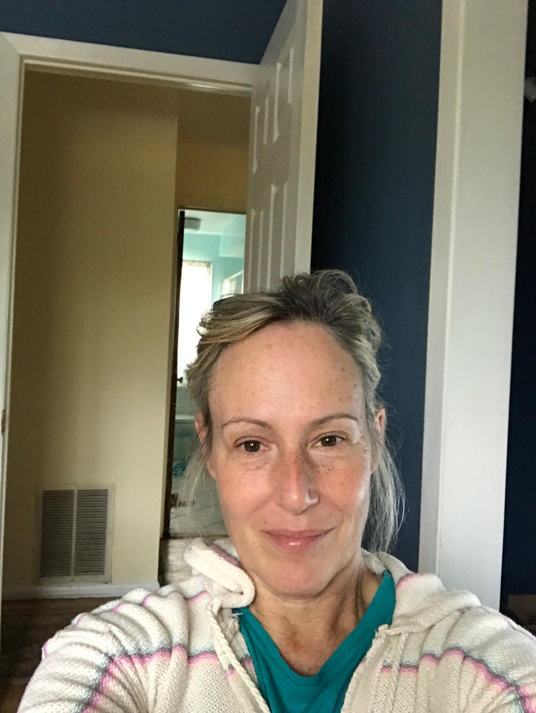

About Me
About me
Several years ago I was enlisted as Airman - First Class - Urciuoli in the army of COBOL programmers fighting to get the code changed before the strike of midnight Y2K. With grit and determination (and a bit of luck), we were able to avoid the dreaded Mad Max scenario just in the nick of time!
Since then I've been out of the limelight acting as a barber (on my own kids' heads), a baker (muffins and donuts at a supermarket near you) and candlestick maker (actually as more of a connoisseur).
Not wanting to slow down just yet, I decided it was time to return to bootcamp. Currently, I can be found wading deep in the weeds at Rutgers bootcamp for aspiring web coders in Somerset NJ.